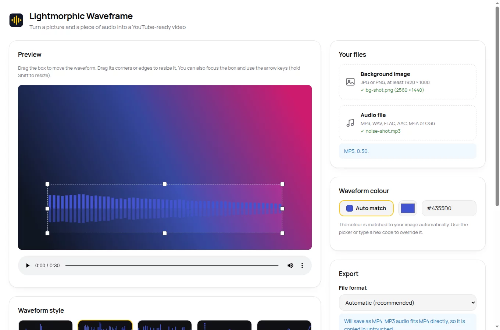
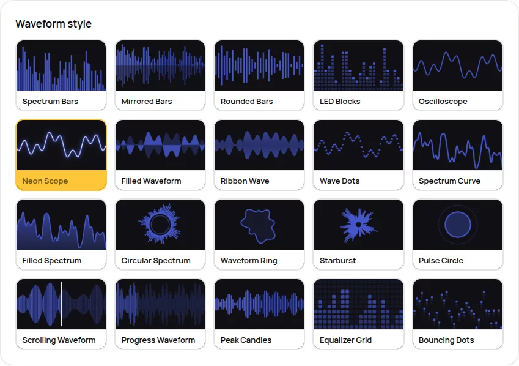

Turn a picture and a piece of audio into a YouTube-ready video
Waveframe is a free, open-source Linux app. Drop in a background image and your audio, place the waveform where you want it, pick one of 20 animated styles, and export a 1080p video. Your audio is copied in bit-for-bit, never re-encoded.

Your audio, untouched
Most video tools quietly re-encode audio and shave a little quality off. Waveframe copies the original audio stream straight into the video file, byte for byte, whether that stream is MP3, WAV, FLAC, AAC/M4A or OGG. The output format is chosen so that copy is always possible: MP4 when your audio fits it, MKV otherwise. YouTube accepts both. If you override the format with one that would force a re-encode, Waveframe says so plainly and refuses to degrade your sound.
20 animated styles
Bars, mirrors, rings, scopes, grids and pulses. Every style appears in the picker as a moving preview, so you choose by eye.
Colour that matches
The waveform colour is picked from your image automatically. Override it any time with a picker or a hex code.
Sharp by refusal
Images below 1920 × 1080 are refused with a plain explanation rather than upscaled into blur.
Free and open
GPL-3.0, no account, no tracking, nothing to pay. FFmpeg is bundled, so the AppImage just runs.
How it works
-
Add your two files
A JPG or PNG background (1920 × 1080 or bigger) and your audio file.
-
Place and style the waveform
Drag the box anywhere, resize it by its corners, choose a style and colour. The preview shows exactly what the video will look like.
-
Export
One click, choose where to save, and you have a 1080p video the same length as your audio, ready to upload.
Twenty ways to move
Classic spectrum bars, SoundCloud-style progress waveforms, neon oscilloscopes, circular spectra, LED blocks, starbursts and more. Every thumbnail in the picker animates, so you choose with your eyes rather than guessing from a name.

Download
One file, no installation. Download, make it executable, run it.
Download the latest AppImagechmod +x Lightmorphic-Waveframe-*.AppImage
./Lightmorphic-Waveframe-*.AppImage64-bit Linux. Free under the GPL-3.0 licence. Source code on GitHub.
Questions people ask
- Does Waveframe change my audio?
- No. The original audio stream is copied into the video byte for byte. Waveframe never re-encodes, resamples or trims it, and it picks the output format (MP4 or MKV) specifically so that copy is always possible.
- Which file formats does it accept?
- Images: JPG or PNG, at least 1920 × 1080. Audio: MP3, WAV, FLAC, AAC/M4A or OGG. The exported video is 1920 × 1080 H.264, in an MP4 or MKV file.
- What does it cost?
- Nothing. Waveframe is free software under the GPL-3.0 licence. No account, no tracking, no paid tier, and the full source code is public on GitHub.
- Will YouTube accept the exported video?
- Yes. The export is 1080p H.264 video in an MP4 or MKV container, both of which YouTube accepts, and the video length matches your audio exactly.
- Which Linux distributions does it run on?
- Any 64-bit distribution that can run AppImages, which covers all the common ones. FFmpeg is bundled inside, so there is nothing else to install.
Get in touch
Found a problem, or want a waveform style that isn't there yet? Tell us. Waveframe gets better because people write in.
Bugs and ideas: open an issue on GitHub
Issues land with a real person. Plain descriptions beat perfect bug reports; say what you did and what happened.